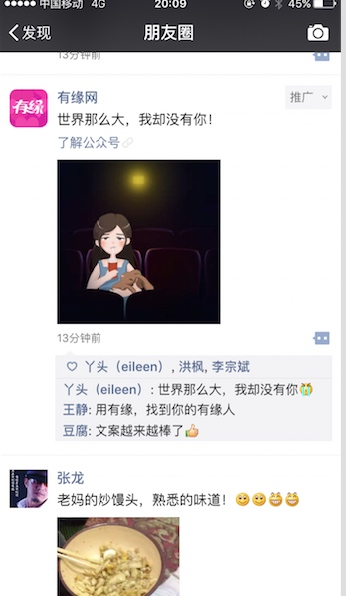
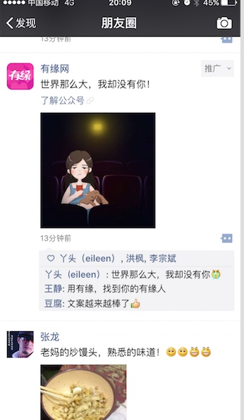

行业思考
qq，baidu才是流量入口，其他公司都是流量增值平台，任何包装成流量入口的公司都注定没有好下场。
中国喜欢以资本为主导的财团方式的业务；
美国则更喜欢纵深的专业如bat类型的公司。
未来属于正现金流公司
1. 盈利才是王道，具备正现金流的公司才能占领市场
2. 盈利能力是企业良好运营能力的背书
3. 盈利能力可以让企业不受桎梏地拓展新战略（仓禀实而知礼节，衣食足而知荣辱）
4. 资本逐利的本质带来骨子里的短视和企业的天然冲突
业务思考
产生质变的方向：
- 微信
- 多产品--多品牌
- 资本----助力多品类
复用能力：品牌，渠道，资本，产品
组织如何能拆出来？？？
多产品 --- 考试成功的怎么办？？
两三个月的合规化
商业化中心怎么对接，技术怎么对接，渠道怎么对接。
每个对接的部门至少有个副总监级别的人负责。
渠道驱动 --》 品牌驱动 先打问号，有可能被推翻。
内置

见面
如何同营销中心对接？？？
如何迅速扩展到其他的平台？？
合同那边怎么安排的？3.14到期了。想和你商量下，我的想法是，基础研发成本+15%提成。考虑到我是新人，提成每月上限可以封顶。比如高于xx万提成，就封顶了
股份 15%（分3年确权）， 按年度进行净利润10%为产品团队发奖金，暂定2年
思明不错；刘颖慧+微博
（1）把生活费，与财富创造两个概念区分开。在保证生活费的情况下，不用那么在乎钱，多去创造一些绝对的价值，其实那时候你会创造更多财富。
（2）不要总拿“薪水”的线性视角来看问题，这世界上所有有钱人都不是靠薪水的。


 
